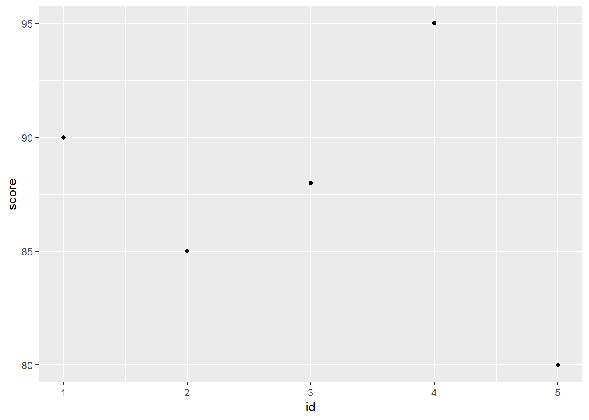
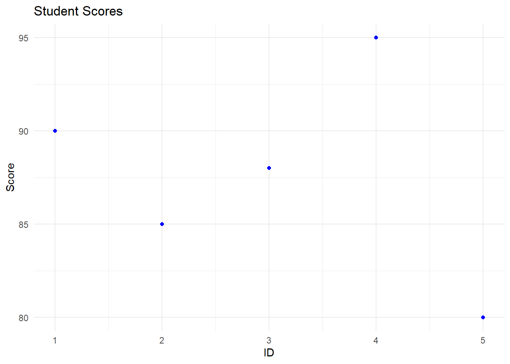
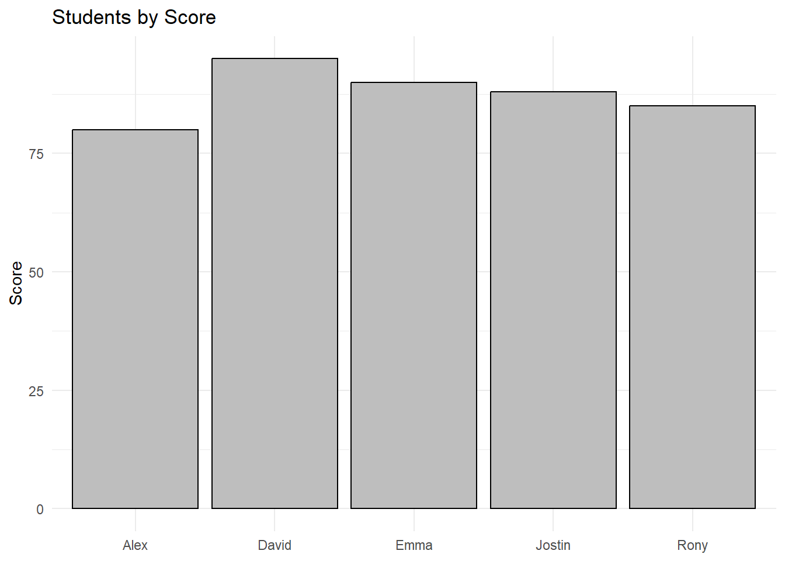

install.packages("tidyverse")
library(tidyverse)Introduction to R: The Basics
Introduction
Welcome to this introductory tutorial on R! R is a powerful language and environment for statistical computing and graphics. It offers a wide variety of statistical and graphical techniques and is highly extensible. One of the key features of R is its package ecosystem, the most notable of which is the tidyverse, a collection of packages designed for data science.
This tutorial is designed for individuals with minimal statistical background. We will cover the basics of R, including how to install and load packages, import data, perform simple data manipulations, and create basic visualizations.
Installing R and RStudio
Before we begin, you need to have R and RStudio installed on your computer. R is the underlying statistical computing environment, while RStudio provides a convenient and powerful user interface.
- Download R from The Comprehensive R Archive Network (CRAN).
- Download RStudio from RStudio’s website.
Getting Started
Setting Up Your Environment
Open RStudio and let’s get started by installing and loading the tidyverse package:
The first line will install the package, and the second will load the package to your current R session. After you install your package, you do not need to use the first line again in your scripts.
Basic R Operations
R can be used as a simple calculator. Try typing 2 + 2 in the console. You can assign values to variables using <-.
x <- 2 + 2
x[1] 4Vectors and Data Frames
Vectors are basic data structures in R that contain elements of the same type. Use the c() function to create a vector:
my_vector <- c(1, 2, 3, 4, 5)
my_vector[1] 1 2 3 4 5A data frame is a table or a two-dimensional array-like structure. Let’s create a simple data frame:
my_data_frame <- data.frame(
id = 1:5,
name = c("Emma", "Rony", "Jostin", "David", "Alex"),
score = c(90, 85, 88, 95, 80)
)
my_data_frame id name score
1 1 Emma 90
2 2 Rony 85
3 3 Jostin 88
4 4 David 95
5 5 Alex 80Importing Data
R can read data from various sources. The read_csv() function from the readr package (part of the tidyverse) is commonly used for reading CSV files:
my_data <- read_csv("path/to/your/file.csv")Replace “path/to/your/file.csv” with the actual file path to a csv file.
Data Manipulation with dplyr
The dplyr package offers a set of functions for manipulating data frames:
filter(): Extracts a subset of rows based on conditions. select(): Selects columns by name. mutate(): Creates new columns or modifies existing ones. summarise(): Summarizes multiple values into a single value.
However, before we use the dplyr package, let’s understand the pipe operator.
Pipe operator
The pipe operator %>%, heavily used in tidyverse packages, allows you to pass the result of one expression as the first argument to the next expression. It’s a powerful tool for chaining together a sequence of operations in a clear and concise manner. Instead of nesting functions or using intermediate variables, you can use the pipe operator to form a pipeline of operations.
How It Works
Consider a simple example without the pipe operator:
result <- sum(c(1, 2, 3, 4, 5))
result[1] 15With the pipe operator, the same operation looks like this:
c(1, 2, 3, 4, 5) %>%
sum() [1] 15Although this is a simplistic example, it illustrates how %>% passes the left-hand side of the operator as the first argument to the function on the right-hand side. This becomes particularly useful with functions from the dplyr package for data manipulation.
Practical Example with dplyr
Let’s revisit the dplyr package from earlier, now with an emphasis on understanding the pipe operator:
filtered_data <- my_data_frame %>%
filter(score > 85) %>%
select(name, score)In this example:
my_data_frameis passed as the first argument to thefilter()function, which filters rows where score > 85.- The result of
filter()is then passed as the first argument toselect(), which keeps only the columns name and score. - The final result is assigned to
filtered_data.
Benefits of Using the Pipe Operator
- Readability: The flow of operations is from left to right, similar to how we read text, making the code easier to follow.
- Maintainability: It’s easier to add or remove steps in the data processing pipeline without having to rewrite function calls or manage temporary variables.
- Clarity: Each step in the pipeline can be clearly seen, making it easier to understand what each part of the code is doing.
The pipe operator is a cornerstone of the tidyverse approach to data manipulation, enabling clear and expressive code that closely resembles natural language. As you become more familiar with R and the tidyverse, you’ll find the pipe operator indispensable for efficient data analysis and transformation.
Mutate, Summarize, and other Functions
The mutate() function allows you to create new columns in your data frame or change existing ones based on some operations or functions applied to the data. It’s particularly useful for feature engineering, calculating new metrics, or preparing your data for analysis.
Let’s say we have a data frame my_data_frame that contains student IDs, names, and scores. We want to add a new column that shows whether each student passed based on their score, with a score of 85 or above considered a pass.
# Add a new column 'passed' with boolean values: TRUE if score >= 85, FALSE otherwise
my_data_frame <- my_data_frame %>%
mutate(passed = score >= 85)
my_data_frame id name score passed
1 1 Emma 90 TRUE
2 2 Rony 85 TRUE
3 3 Jostin 88 TRUE
4 4 David 95 TRUE
5 5 Alex 80 FALSEThis will add a new column passed to my_data_frame, where each row will have TRUE if the student’s score is 85 or higher, and FALSE otherwise.
Modifying Existing Columns
You can also use mutate() to modify existing columns. For example, suppose you want to standardize the scores (subtract the mean and divide by the standard deviation) for analysis.
# Standardize the 'score' column
my_data_frame <- my_data_frame %>%
mutate(score_standardized = (score - mean(score)) / sd(score))
my_data_frame id name score passed score_standardized
1 1 Emma 90 TRUE 0.4289820
2 2 Rony 85 TRUE -0.4647305
3 3 Jostin 88 TRUE 0.0714970
4 4 David 95 TRUE 1.3226945
5 5 Alex 80 FALSE -1.3584430This operation creates a new column score_standardized where each student’s score is standardized.
Using Multiple mutate() Operations
You can chain multiple operations within a single mutate() call. For example, if you wanted to add a column for the grade (A, B, C, etc.) based on the standardized score, you could do it within the same mutate():
# Add a grade column based on standardized scores
my_data_frame <- my_data_frame %>%
mutate(
score_standardized = (score - mean(score)) / sd(score),
grade = case_when(
score_standardized >= 1 ~ "A",
score_standardized >= 0 ~ "B",
score_standardized < 0 ~ "C"
)
)
my_data_frame id name score passed score_standardized grade
1 1 Emma 90 TRUE 0.4289820 B
2 2 Rony 85 TRUE -0.4647305 C
3 3 Jostin 88 TRUE 0.0714970 B
4 4 David 95 TRUE 1.3226945 A
5 5 Alex 80 FALSE -1.3584430 CIn this example, case_when() is used to assign grades: “A” for standardized scores >= 1, “B” for scores >= 0 and < 1, and “C” for scores < 0. This illustrates how mutate() can be used to perform multiple transformations simultaneously, enhancing the readability and efficiency of your data manipulation code.
Summarizing Data with summarise()
The summarise() function in dplyr is used to create summary statistics for a dataset or subsets of a dataset. This function can be particularly powerful when combined with group_by(), which groups the data frame by one or more variables.
Basic Usage of summarise()
Here’s how you can use summarise() to calculate the average (mean) score of all students in my_data_frame:
average_score <- my_data_frame %>%
summarise(mean_score = mean(score))
average_score mean_score
1 87.6This code calculates the mean of the score column and stores the result in a new data frame called average_score with a single column mean_score.
Grouped Summaries
To calculate the average score by a categorical variable (e.g., by a hypothetical class column), you first group the data by that variable using group_by(), then apply summarise():
First, let’s add a hypothetical class variable to our data frame to categorize students into two classes, “A” and “B”. We’ll use the mutate() function to accomplish this:
my_data_frame <- my_data_frame %>%
mutate(class = if_else(id %% 2 == 0, "A", "B"))
my_data_frame id name score passed score_standardized grade class
1 1 Emma 90 TRUE 0.4289820 B B
2 2 Rony 85 TRUE -0.4647305 C A
3 3 Jostin 88 TRUE 0.0714970 B B
4 4 David 95 TRUE 1.3226945 A A
5 5 Alex 80 FALSE -1.3584430 C BThis code adds a new column class to my_data_frame, where students with an even id are assigned to class “A” and students with an odd id are assigned to class “B”.
Now that we have a class variable, we can calculate the average score for each class:
average_score_by_class <- my_data_frame %>%
group_by(class) %>%
summarise(mean_score = mean(score))
average_score_by_class# A tibble: 2 × 2
class mean_score
<chr> <dbl>
1 A 90
2 B 86This will calculate the mean score for each class separately.
Multiple Summary Functions
You can also use summarise() to apply multiple summary functions at once. For example, to calculate the mean, median, and standard deviation of scores:
summary_statistics <- my_data_frame %>%
summarise(
mean_score = mean(score),
median_score = median(score),
sd_score = sd(score)
)
summary_statistics mean_score median_score sd_score
1 87.6 88 5.59464Using summarise() with mutate()
While summarise() reduces your data to a single summary row, mutate() can be used alongside to add summary columns to the original data frame. For example, adding a column with the mean score to each row:
my_data_frame_with_mean <- my_data_frame %>%
mutate(mean_score = mean(score))
my_data_frame_with_mean id name score passed score_standardized grade class mean_score
1 1 Emma 90 TRUE 0.4289820 B B 87.6
2 2 Rony 85 TRUE -0.4647305 C A 87.6
3 3 Jostin 88 TRUE 0.0714970 B B 87.6
4 4 David 95 TRUE 1.3226945 A A 87.6
5 5 Alex 80 FALSE -1.3584430 C B 87.6Data Visualization with ggplot2
ggplot2 is a part of the tidyverse that allows for creating complex and beautiful visualizations using a consistent and intuitive syntax. The name ggplot2 is derived from the concept of the grammar of graphics, a system for describing and building a wide range of graphics.
Basics of ggplot2
A ggplot2 graph is built up from a few basic elements:
- Data: The dataset you want to visualize.
- Aesthetics (
aes): Defines how variables in the data are mapped to visual properties (aesthetics) of the graph such as x and y axes, color, size, etc. - Geometries (
geom_functions): The geometric objects (shapes) that represent the data points. For example, points (geom_point()for scatter plots), lines (geom_line()), and bars (geom_bar()for bar charts).
Creating a Scatter Plot
Let’s create a simple scatter plot to visualize the relationship between two variables in my_data_frame.
ggplot(my_data_frame, aes(x = id, y = score)) +
geom_point()
In this example, ggplot() initializes the plot with the data frame my_data_frame, and aes(x = id, y = score) specifies that id should be on the x-axis and score on the y-axis. geom_point() adds points to represent each row in the dataset.
Customizing Your Plot
ggplot2 offers extensive customization options. For example, you can add titles and labels, change the theme, and modify the color of the points.
ggplot(my_data_frame, aes(x = id, y = score)) +
geom_point(color = "blue") +
labs(title = "Student Scores", x = "ID", y = "Score") +
theme_minimal()
This adds a title to the plot, labels the x and y axes, changes the point color to blue, and applies a minimal theme for a cleaner look.
Creating a Bar Chart
To create a bar chart showing students by score, you can use geom_col().
ggplot(my_data_frame, aes(y = score, x = as.factor(name))) +
geom_col(color = "black", fill = "grey") +
labs(title = "Students by Score", x = NULL, y = "Score") +
theme_minimal()
Here, as.factor(name) is used to treat the name variable as a categorical variable. geom_bar() by default counts the number of occurrences of each unique value.
ggplot2 is a versatile and powerful tool for creating visualizations in R. With its consistent syntax and comprehensive features, it allows you to construct a wide variety of graph types, from simple scatter plots to complex multi-layered graphics. As you become more familiar with ggplot2, you will discover its full potential for conveying information in a visual format.
Certainly! Let’s add a section on the summarise() function from the dplyr package. summarise() is used to reduce each group of a data frame to a single summary value, making it essential for data analysis tasks such as calculating summaries (mean, median, sum, etc.) across groups.